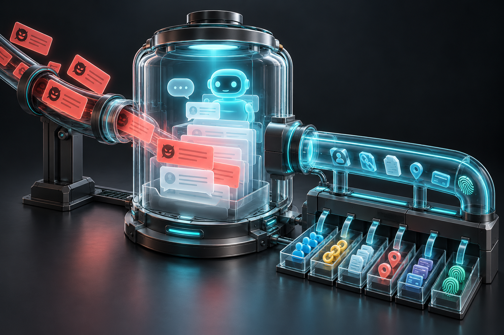
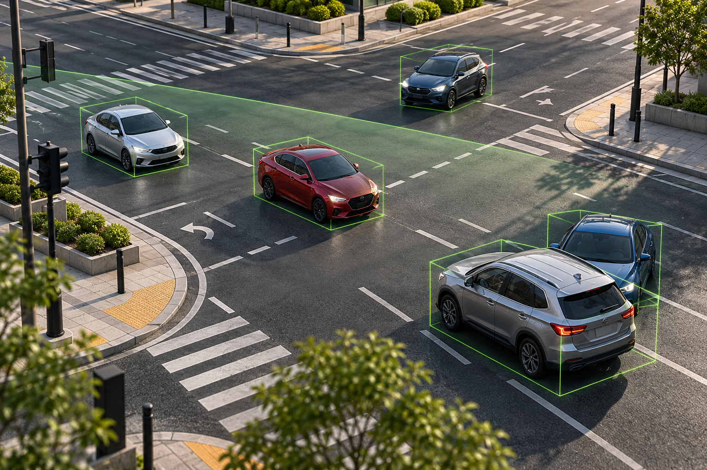
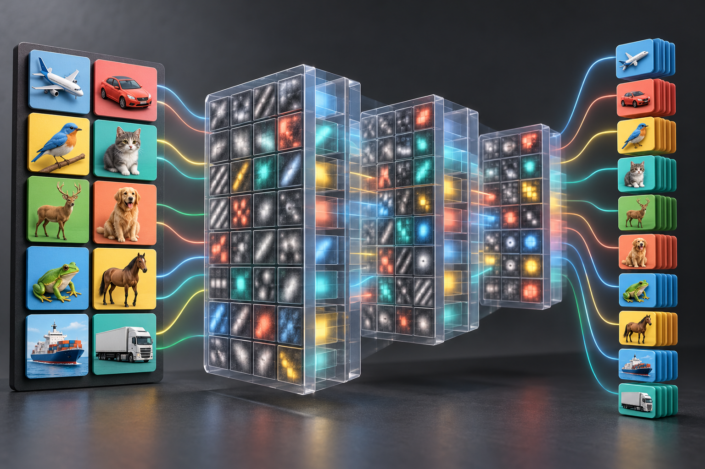
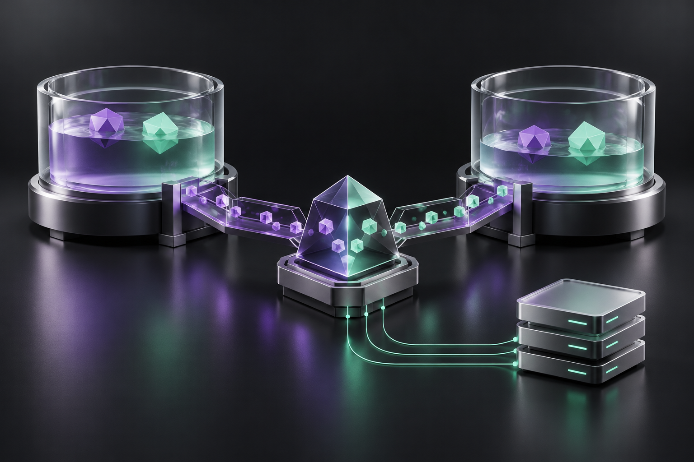
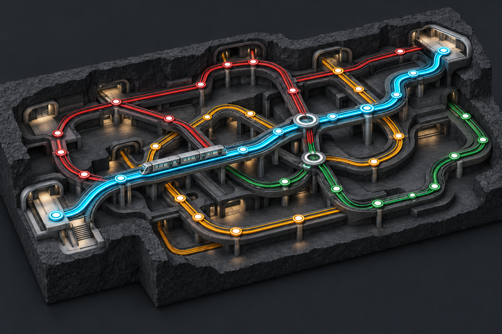
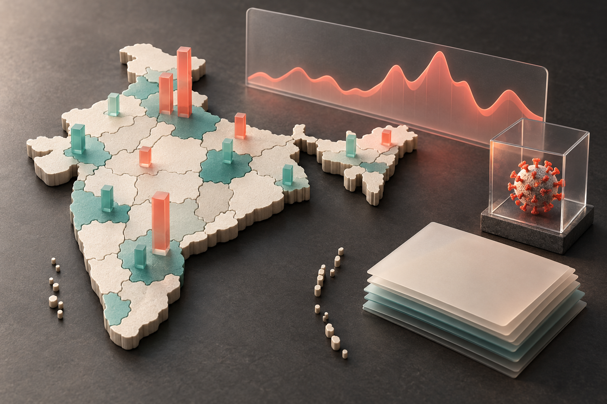
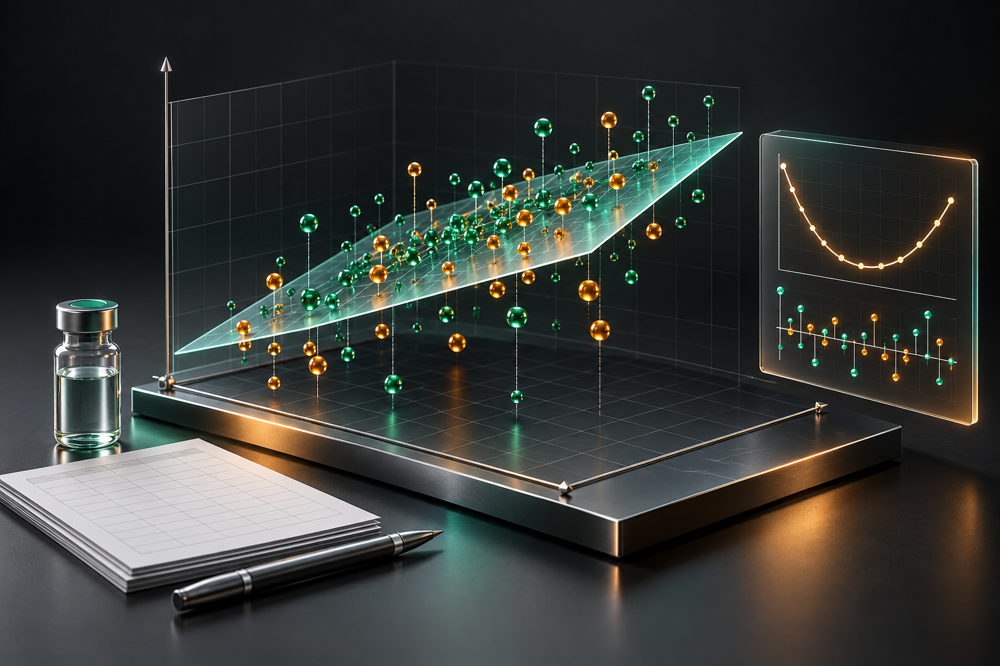
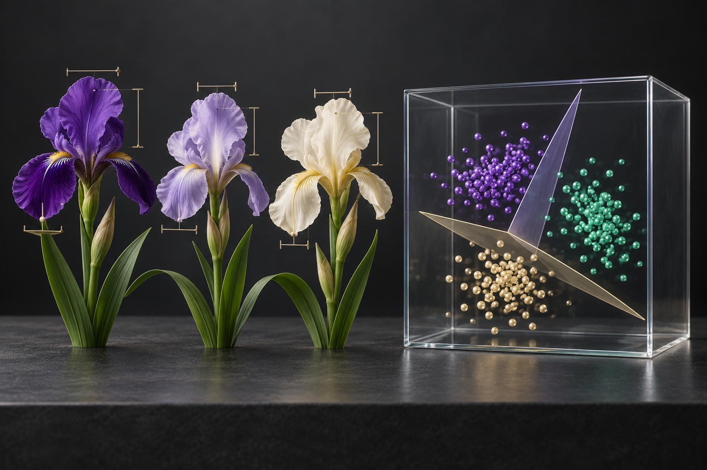

Project Cover Images
12 AI-generated conceptual illustrations. Select an image to view the full-resolution PNG.








12 AI-generated conceptual illustrations. Select an image to view the full-resolution PNG.







